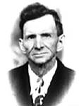

fiche familiale
*******************************************************************************
Ludger-Léger Lambert
décède à l'âge de 79 ans
Naissance: en 1851 à Ste-Ursule, cté Maskinongé
Décès: 13 oct 1930 à l'hôpital Ste-Famille de Ville-Marie
Sépulture: 14 oct 1930 au cimetière de Laverlochère
Arrivé au Témiscamingue en 1905.
Père: Jean-Baptiste-Louis Lambert
Mère: Tharsile Giguère
Mariage: 16 jul 1872 à St-Léon-le-Grand, cté Maskinongé
1èr épouse: Célina Bergeron
décède à l'âge de 44 ans
Naissance: en 1852
Décès: 2 jul 1896 à Maskinongé, cté Maskinongé
Père: Jean-Baptiste Bergeron
Mère: Olive Roy
*******************************************************************************
Enfant 1 Arthur Lambert
décède à l'âge de 43 ans
Naissance: en 1877
Décès: 11 fév 1920 à Ville-Marie, cté Témiscamingue
Sépulture: à St-Boniface-Shawinigan, cté St-Maurice
Parrain de Marcel Lambert
Mariage le 16 fév 1903 à St-Paul de Grand'Mère
Conjointe: Marie-Clara Bellemare
n. 13 mai 1881 d. en 1974
-------------------------------------------------------------------------------
Enfant 2 François Lambert
décède à l'âge de 84 ans
Naissance: 3 fév 1879 à Ste-Ursule, cté Maskinongé
Parrain Théophile Bastien, marraine Marie Bergeron.
Décès: 8 fév 1963 à Grand-Mère, cté Champlain
Parrain d'Omer Lambert.
Mariage en 1902 à Grand'Mère
Conjointe: Phébée Giguère
-------------------------------------------------------------------------------
Enfant 3 Marie-Anne-Azilda Lambert
décède à l'âge de 75 ans
Naissance: 16 jan 1883
Décès: 21 déc 1958 à Laverlochère, cté Témiscamingue
Marraine de Florence Lambert et d'Aline Lambert.
Mariage le 16 jun 1902 à Grand-Mère, cté Champlain
Conjoint: Onésime Bournival
n. en 1876 d. 16 sep 1945
-------------------------------------------------------------------------------
Enfant 4 Léontine Lambert
décède à l'âge de 91 ans
Naissance: 31 août 1884 à Ste-Ursule, cté Maskinongé
Parrain Hormidas Ringuette, marraine Amanda Lambert
Décès: 16 déc 1975 à Laverlochère, cté Témiscamingue
Marraine d'Eddy Lambert, de Lucien Lambert et de Thérèse Rivest
Mariage le 29 jan 1906 à Notre-Dame-du-Rosaire de Ville-Marie
Conjoint: Donat Bougie
n. 18 fév 1884 d. 23 mars 1971
-------------------------------------------------------------------------------
| |
Enfant 5 Omer Lambert décède à l'âge de 78 ans. Naissance le 26 nov 1885 à Ste-Ursule, cté Maskinongé Baptême: 27 nov 1885 à Ste-Ursule Parrain son oncle François Lambert, marraine Aurélie Lincourt Décès le 29 mai 1964 à Laverlochère, cté Témiscamingue Sépulture: 1 juin 1964 au cimetière de Laverlochère Arrivée au Témiscamingue en 1904. Parrain d'Adrien Lambert. Mariage le 3 aoû 1914 à St-Isidore de Laverlochère Conjointe: Marie-Anne Roy n. 5 jul 1894 d. 13 jan 1984 |
|   |
Enfant 6 Pierre Lambert décède à l'âge de 72 ans. Naissance le 21 jul 1887 à Ste-Ursule, cté Maskinongé Décès le 25 fév 1960 à Laverlochère, cté Témiscamingue (ses ancêtres) Mariage le 26 jul 1909 à St-Isidore de Laverlochère Conjointe: Marie-Anne Rivest Rivet n. 14 oct 1892 d. 9 oct 1971 (sa famille) |
Enfant 7 Parmélia Lambert
décède à l'âge de 75 ans
Naissance: 22 mai 1889
Décès: 6 avril 1965 à Laverlochère, cté Témiscamingue
Marraine de Lia Lambert.
Mariage le 29 jan 1919 à Notre-Dame-du-Rosaire de Ville-Marie
Conjoint: Henri Cormier
n. 31 mar 1885 d. 21 jan 1969
-------------------------------------------------------------------------------
Enfant 8 Edouardina Lambert
Conjoint: M. Chrétien d. avant 1989
-------------------------------------------------------------------------------
Enfant 9 Aldéa Lambert
Mariage en 1899 à Grand-Mère, cté Champlain
Conjoint: Wilfrid Corriveau
*******************************************************************************
Mariage: 14 fév 1898 à St-Boniface-Shawinigan, cté St-Maurice
2ème épouse: Marie-Zéphire Bourassa
décède à l'âge de 84 ans
Naissance: en 1844
Décès: 15 avr 1928 à Ville-Marie, cté Témiscamingue
Sépulture: 18 avril 1928 au cimetière de Ville-Marie
Père: Joseph Bourassa
Mère: Émilie Grenier
*******************************************************************************
| Début de la page | Page précédente | Page des ancêtres | Page d'accueil |